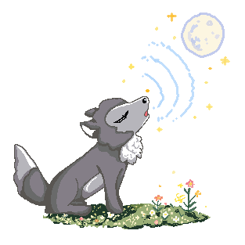
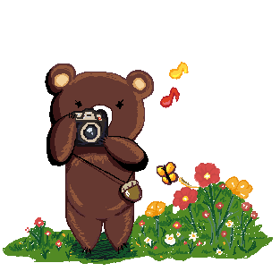
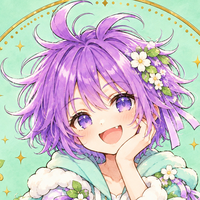
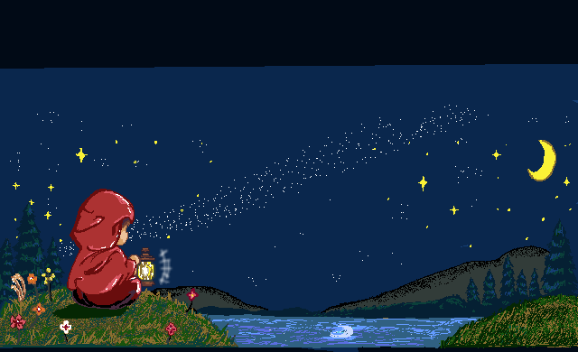
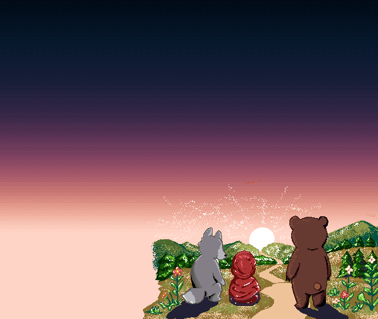

くまたんのカメラ
感じたことを、かたちにする

作り手：だねもん企画、構成、動画制作、SNS。手ざわりのあるものを、ひとつずつ。映像やドット絵の制作を自分で企画して、自分でつくっています。
- 企業の記念映像の制作 （創立100周年／内容は非公開）
- Vtuber動画の企画・制作 （自主・依頼あわせて100本以上／一部は非公開）
- 自主制作「ちいさな森のおとぎ話」 （ドット絵アニメ／現在はお休み中）

NEMOSHAのこと
転勤で、いろんな土地に移り暮らしてきました。
子どもの頃は、学校に行けない時期もありました。
場所が変わっても、灯りを持って、自分の根っこを探しています。
その途中で見つけた思いを、言葉と声、映像で、カタチにしているのがNEMOSHAです。

あなたの
何でもない日々が、
ささやかな幸せで
満ち溢れていますように